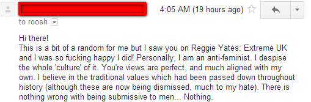
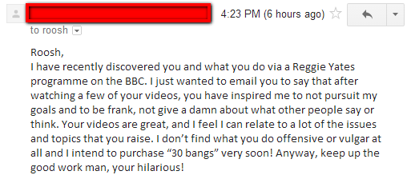
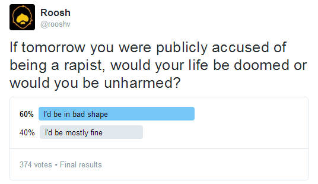

Daryush "Roosh" Valizadeh created ROK in October 2012. You can visit his blog at RooshV.com or follow him on Twitter and Facebook.


The following article was published this week on Roosh V.
Over the summer I agreed to let the BBC and their host Reggie Yates attend one of my lectures for their “masculinity in Britain” documentary. Knowing how leftist the BBC is, we can’t be surprised that they ignored the bulk of my most relevant work to paint me as a rapist and rape instructor, using out-of-context quotes that they found on social justice websites. One-third of the documentary focused entirely on me and the wildest things I’ve written in the past ten years. Here’s the full documentary:
Here’s a cut of the documentary that contains just the parts I’m in:
At one part in the documentary, I ask Reggie if he’s gay, because he evaded my question on how fame has allowed him to have groupies. He claimed to be straight, but I don’t know a single straight man who would pose for this sort of photo:

Here’s my video response to the documentary:
Even though we shouldn’t be surprised that the BBC hired a non-masculine man to report on masculinity, their underlying social justice agenda should be called out and the conclusions made in the documentary should be ignored. What the BBC did with the above documentary is essentially hire a carpenter to review an Italian opera. Besides a handful of exaggerated facial expressions made for the camera, the carpenter will not be able to analyze the opera on a level above that of even a grade-school trumpet player.
Many men have asked me what I expected from the BBC. I didn’t expect anything, and as you can see in my response video, I can’t say I’m angry at their coverage. The reason is that there is nothing the media can do anymore to hurt me, and even if they paint me as a baby murderer, I will still gain readers because of it. When you are in an anti-fragile position, you’re immune to all manner of attacks, and so it’s the coverage alone that helps me because it gets my ideas across to those who have yet to see it. Even if 0.1% of people who watched the BBC documentary become readers of mine, it’s still a huge win, since doing it only cost me a couple hours of time.
 
On the other hand, people who are fragile are dependent on a constant stream of positive coverage from the media. They cannot have whispers and rumors that paint them as less pure than their public image. My image has already been dragged through the mud, so the only direction for me is up, regardless of what is said about me from this point on. I can be accused of torturing women in dungeons on live television and I wouldn’t lose a single reader, but if the same happened to Reggie, he would lose his job and his BBC-sponsored fame.
I did a Twitter poll the other week that asked men what would happen to their lives if they were falsely accused of rape. It shows that most men are still in a fragile position.

As the narrative loses steam and we enter a chaotic period where the mentally ill run the asylum, you must make the attempt to be as anti-fragile as possible so that when a false accusation is thrown your way, or a BBC host of questionable sexuality announces to its audience that you must be a rapist after reading an out-of-context quote, you don’t lose a single minute of sleep. The BBC program tried to paint me as a criminal, but instead I gained more fans and sold more books. As long as my name exits the mouth of my enemies, I win, and I will continue to win. I hope a growing percentage of my readers can find themselves in this position as well.
Read Next: Review Of Antifragile By Nassim Taleb